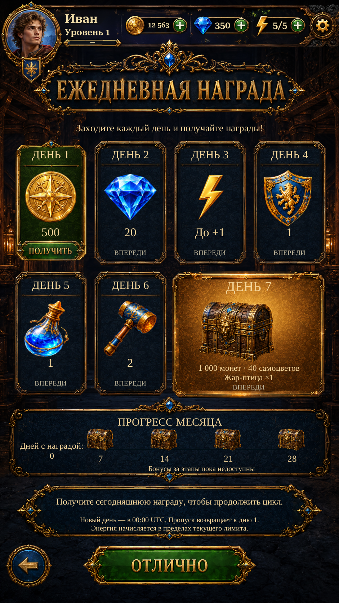

Daily Reward · original buttons R2Daily Reward · original buttons R2
Original ПОЛУЧИТЬ button on the available day card and original ОТЛИЧНО button at the bottom. Claim grants the current daily reward; Great returns Home without granting a reward. English labels remain live and localizable.
These are actual Unity captures with isolated test saves. The implemented seven-day schedule and actual saved progress remain authoritative. Monthly milestone bonus payouts remain unavailable and are labelled accordingly.
